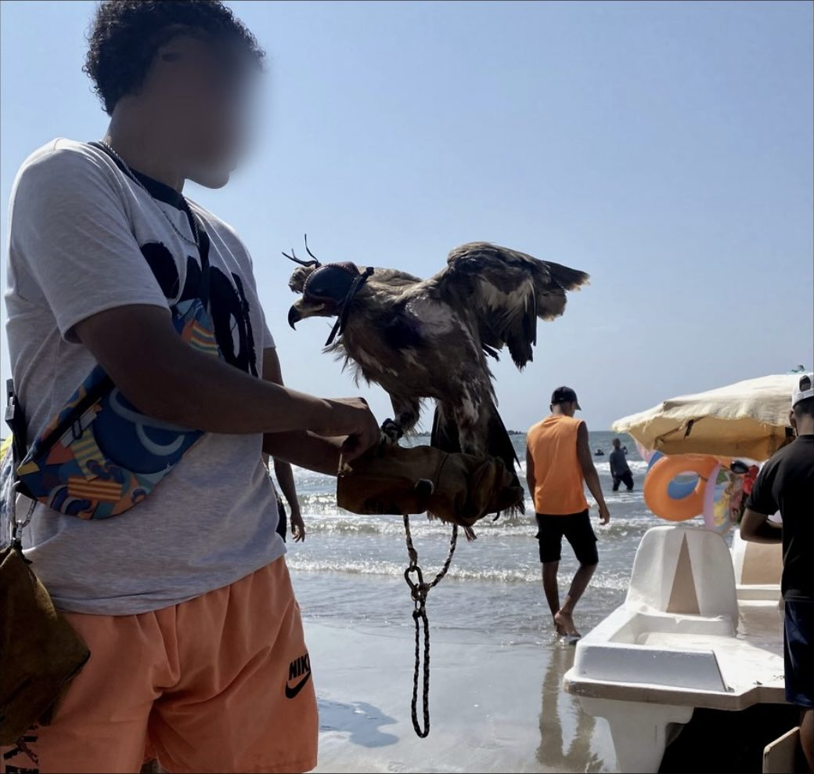
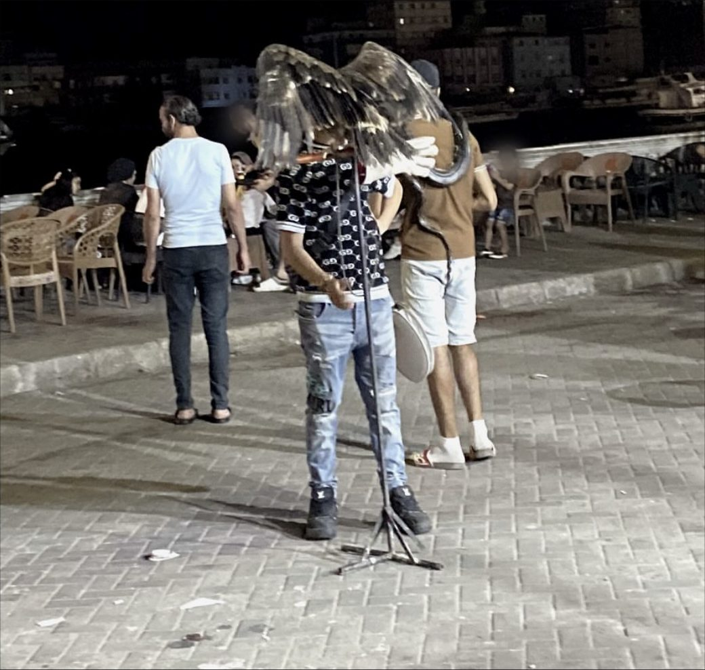
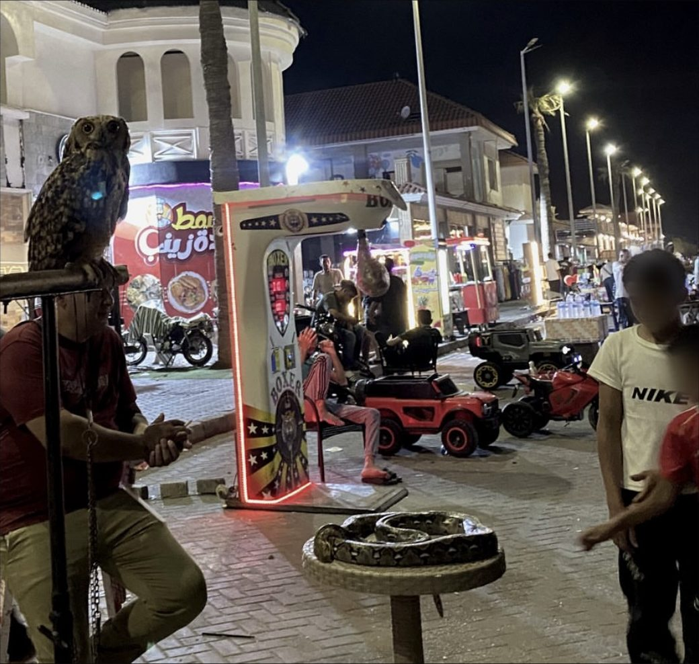
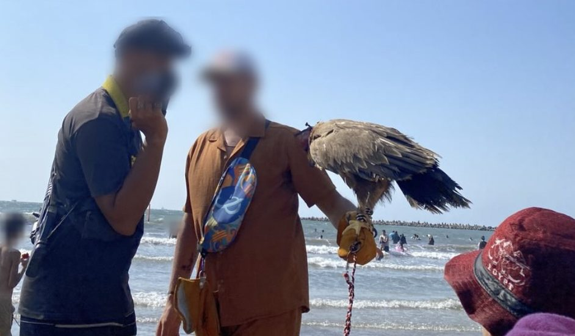

Case Register
Reports of harm to animals in Egypt usually circulate as social media posts, videos and news items. This register gives each incident that Animal Crime Bureau documents or verifies a fixed number and one standard format, so that it can be cited and counted.
Every record states the month, the governorate, the animals involved, what was documented, the legal provision that applies, and the grade of the evidence behind it. The grade runs from 1, where Animal Crime Bureau observed the incident directly, to 4, where sources disagree. A record is never deleted. Corrections and new information are added to the same record with their date.
Records
| Number | Month | Governorate | Animals | Documented | Provision | Evidence |
|---|---|---|---|---|---|---|
| ACB/2026/001 | July 2026 | Damietta | Dogs | Killed by poisoning | Penal Code, Article 357 | 2 Corroborated |
| ACB/2026/002 | August 2026 | Damietta | Diurnal raptors, nocturnal raptors, constrictor snakes, primates | Kept captive and displayed for photographs | Environment Law, Article 28 | 1 Direct observation |
ACB/2026/001
Several independent sources reported dogs killed by poisoning in Damietta Governorate in July 2026. Animal Crime Bureau verified the place and the month.
- Month
- July 2026
- Governorate
- Damietta
- Animals
- Dogs
- Documented
- Killed by poisoning
- Provision
- Penal Code, Article 357قانون العقوبات، المادة ٣٥٧
- Evidence
- 1 Direct observation
- 2 Corroborated (grade of this record)
- 3 Single source
- 4 Contested
- Sources
- Social media posts, including a local news page
- Related
- Investigation Report No. 1
- Published
- October 2026
ACB/2026/002
Animal Crime Bureau documented captive wild animals displayed to the public for photographs on a public beach and a waterfront promenade in Damietta Governorate in August 2026.
- Month
- August 2026
- Governorate
- Damietta
- Animals
- Diurnal raptors, nocturnal raptors, constrictor snakes, primates
- Documented
- Kept captive and displayed for photographs
- Provision
- Environment Law, Article 28قانون البيئة رقم ٤ لسنة ١٩٩٤، المادة ٢٨
- Evidence
- 1 Direct observation (grade of this record)
- 2 Corroborated
- 3 Single source
- 4 Contested
- Sources
- Animal Crime Bureau field documentation
- Related
- Petition: Species, Not Stock
- Published
- October 2026




How the register works
One record covers one act, in one governorate, in one month. A single investigation can produce several records.
No individual is named. Locations are given at governorate level.
Numbers follow the form ACB/year/sequence and are never changed or reused. A number is assigned when an incident is documented and the record is published later, so the published sequence can have gaps.
Evidence grades
- 1Direct observation. Animal Crime Bureau documented the incident in the field itself.
- 2Corroborated. Two or more independent sources, with the place and month verified by Animal Crime Bureau.
- 3Single source. One source, with the place and month verified by Animal Crime Bureau.
- 4Contested. The sources disagree on what happened.
Last updated October 2026.